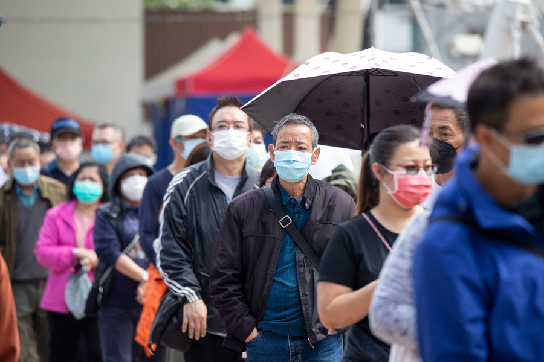

COVID-19
COVID-19, также известный как коронавирус, стал глобальной пандемией, повлекшей за собой серьезные последствия для здоровья людей, экономики и общества в целом. Начиная с появления в конце 2019 года в китайском городе Ухань, вирус быстро распространился по всему миру, заражая миллионы людей и вызывая тысячи смертей.
COVID-19 вызывает ряд симптомов, включая высокую температуру, кашель, затрудненное дыхание, утомляемость и потерю обоняния и вкуса. У некоторых пациентов болезнь протекает в тяжелой форме, требующей госпитализации и подключения к аппарату искусственной вентиляции легких. Старшие люди и люди с хроническими заболеваниями находятся в группе риска и подвержены более тяжелому течению болезни.
Для предотвращения распространения вируса власти во многих странах ввели карантинные меры, включая закрытие школ и предприятий, ограничение передвижения и обязательное ношение масок. Эти меры, хотя и несут определенные неудобства для людей, позволяют снизить вероятность заражения и способствуют снижению нагрузки на медицинские учреждения.
Однако, помимо угрозы для здоровья, COVID-19 также оказал серьезное воздействие на экономику. Многие компании вынуждены были закрыться, а миллионы людей потеряли свои рабочие места из-за экономических последствий пандемии. Возобновление экономической активности и восстановление благосостояния людей требует комплексного подхода и скоординированных усилий со стороны правительств, бизнеса и общества в целом.
Таким образом, COVID-19 представляет серьезную угрозу для здоровья и благосостояния людей по всему миру. Для преодоления этой пандемии было необходимо соблюдать рекомендации медицинских экспертов, соблюдать гигиенические меры и быть взаимовыручными и поддерживать друг друга в такие непростые времена.